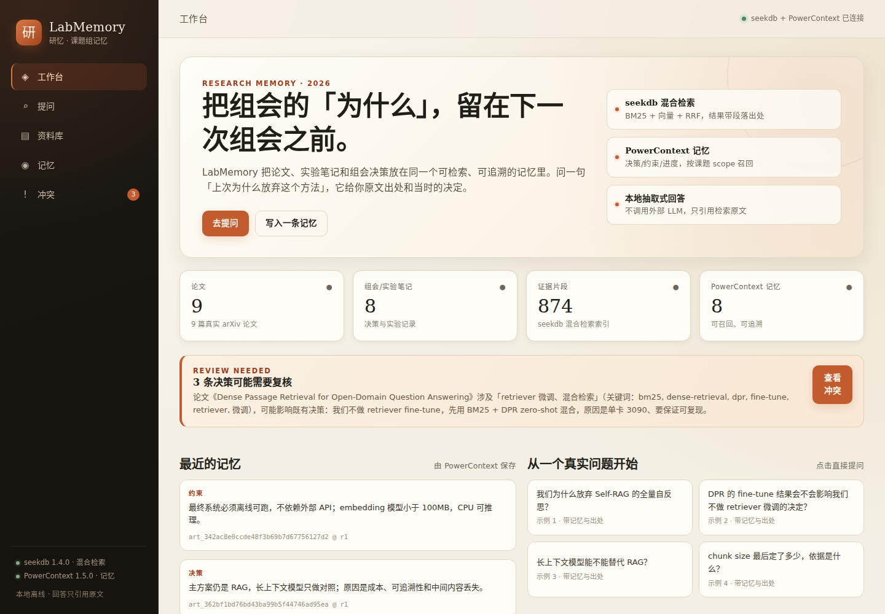
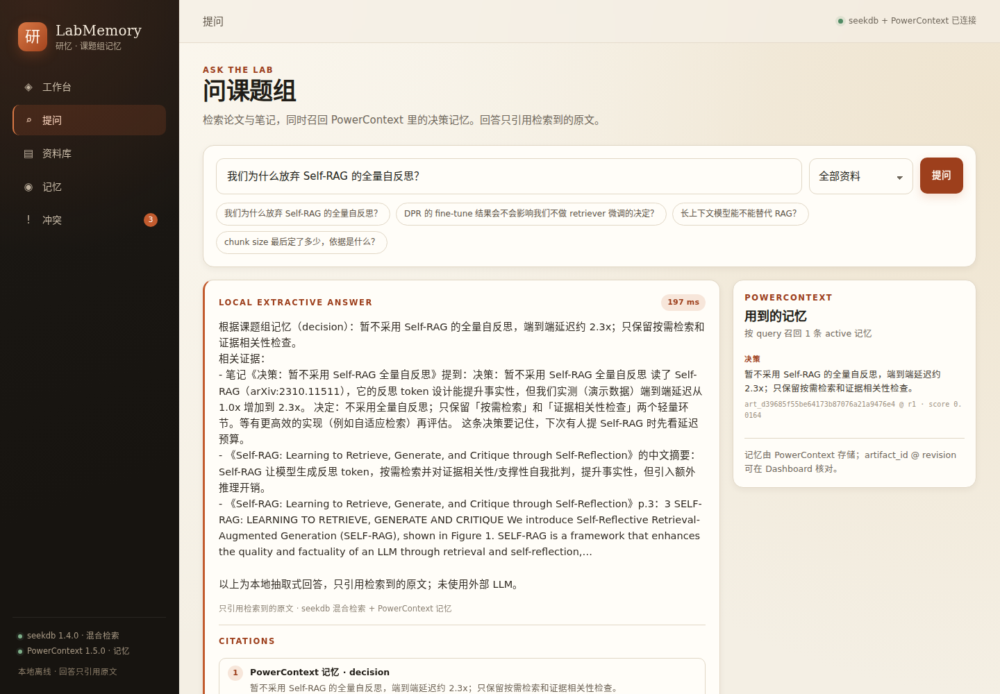
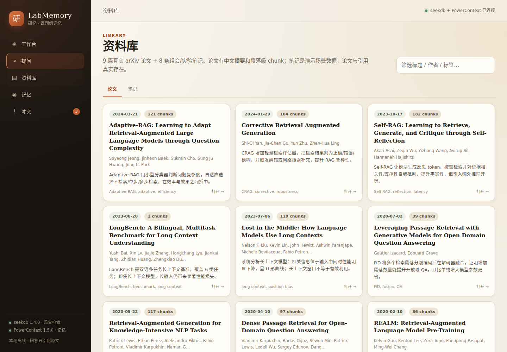
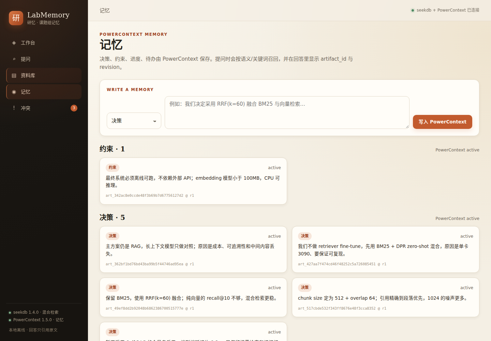
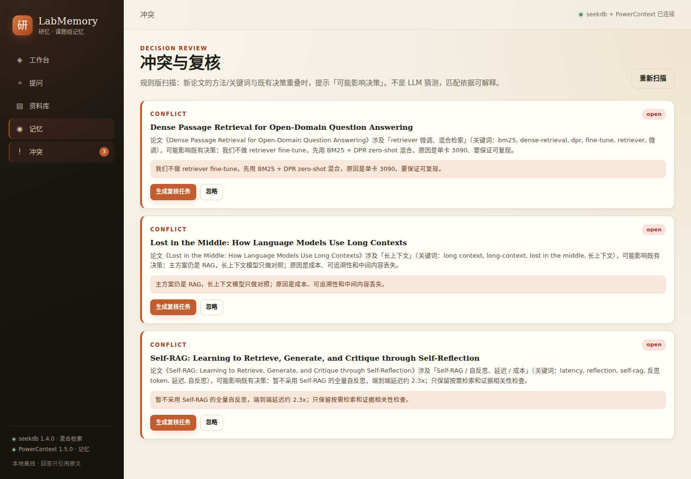

找不到
几十篇 PDF，只记得「有一篇讲过」，却翻不到那一页。
LabMemory 把论文、实验笔记和组会决策放进同一个可检索、可追溯的记忆。问一句「上次为什么放弃这个方法」，它给你原文出处和当时的决定。

暂不采用 Self-RAG 的全量自反思，端到端延迟约 2.3x。
art_d39685f5… @ r1
是重新找回上下文：这篇论文当时为什么被否？chunk size 最后为什么定 512？导师上个月说的约束是什么？这些答案通常散在 PDF、聊天记录和某个人的脑子里。
几十篇 PDF，只记得「有一篇讲过」，却翻不到那一页。
决策的理由没有落盘，下次开会重新吵一遍。
新论文与旧决策相关，却没人提醒需要复核。
不是又一个论文问答。LabMemory 同时检索原文，并召回课题组已经做过的决定。
9 篇真实论文 + 8 条组会/实验笔记。PDF 按页切 chunk，每篇生成中文摘要；笔记保留日期、类型和标签。
ingest.py --resetseekdb 同时跑 BM25 全文与向量检索，RRF 融合；结果带论文/笔记、章节、页码和分数，点得回原文。
MATCH … + l2_distance …PowerContext 保存决策、约束、进度、待办。回答里显示 artifact_id @ revision；新论文与旧决策冲突时提示复核。
art_… @ r1下面是真实运行截图。演示问题：我们为什么放弃 Self-RAG 的全量自反思？




同时使用 seekdb 与 PowerContext，分工写清楚：一个负责「证据」，一个负责「决定」。
知识证据层
VECTOR(384) + FULLTEXT INDEX + 标量过滤SELECT id, source_title,
MATCH(search_text, keywords) AGAINST (%s) AS bm25,
l2_distance(embedding, %s) AS dist
FROM chunks
ORDER BY dist ASC
LIMIT 30;决策记忆层
POST /v1/memory/remember
{ "scope_id": "scp_…",
"kind": "decision",
"text": "暂不采用 Self-RAG 的全量自反思…" }
POST /v1/memory/search
{ "scope_id": "scp_…",
"query": "为什么放弃 Self-RAG？" }开发记录会包含 Qoder 会话截图、prompt、改动文件和 commit；Qoder 账号 UID 在提交材料中提供。
把「组会记忆」拆成导入、混合检索、记忆、冲突四条链路，写成可执行的 SPEC。
Qoder 会话将覆盖后端接口、前端迭代、测试与修复；每次 session 留 prompt 和运行结果。
通过 Qoder Sites 发布本页，可见范围设为「任何人都可访问」。
需要 WSL2 Ubuntu、Python 3.12、seekdb 1.4、PowerContext 1.5。完整步骤见仓库 README。
# 1. seekdb（若未运行） seekdb --base-dir ~/labmemory-seekdb --port 2881 --nodaemon # 2. PowerContext 1.5（Basic memory，无需模型 Key） powercontext server run --env-file ~/powercontext-manual/manual.env # 3. 导入 9 篇论文 + 8 条笔记 + 8 条记忆 python -m backend.seed.ingest --reset # 4. 启动应用 uvicorn backend.app.main:app --host 0.0.0.0 --port 8000
9 篇论文均来自 arXiv，标题与链接可逐条核对。组会/实验笔记是演示场景数据，实验数值已标注为演示数据。
代码、运行说明、验证样例和 Qoder 开发记录都在仓库中。评审可按 README 在本机复现。